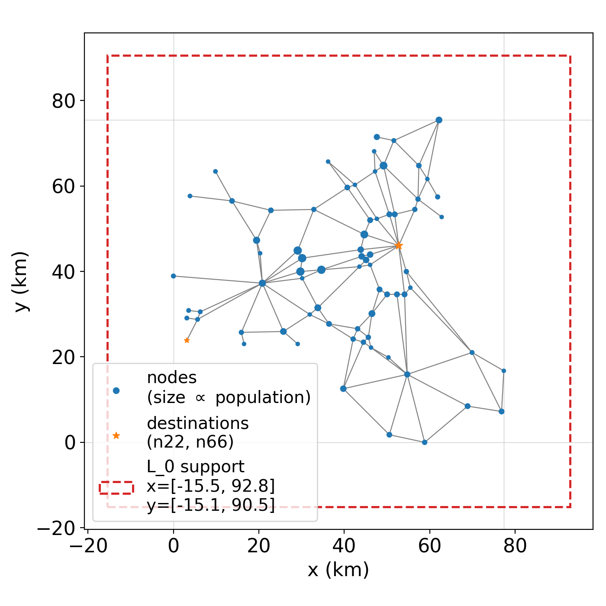
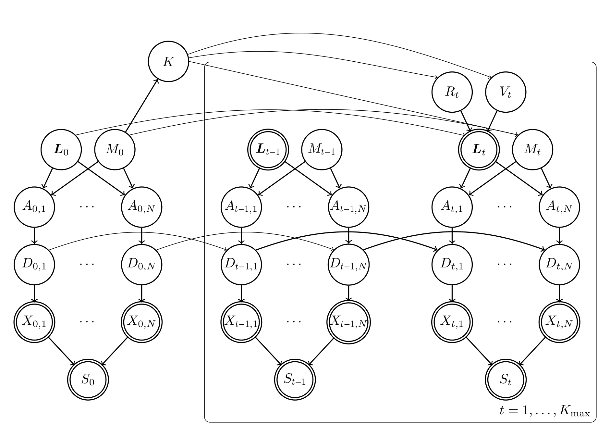
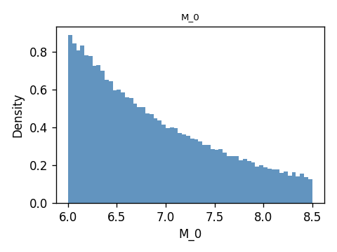
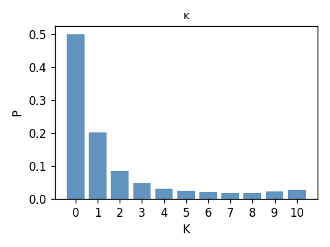
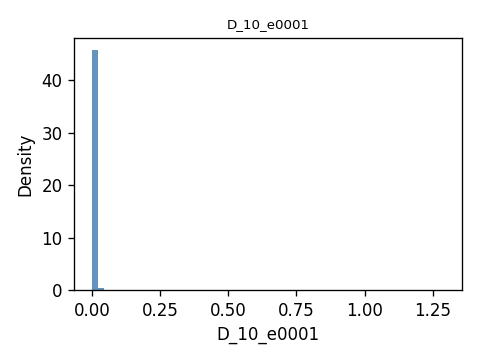
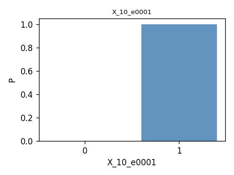
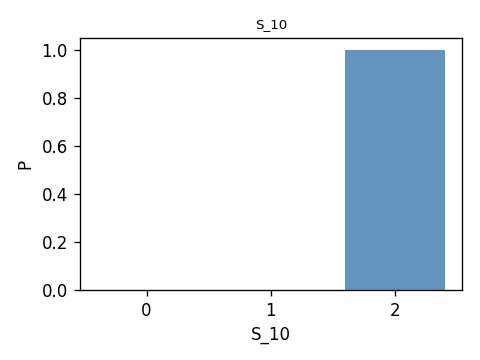

EMA aftershock example¶
This example builds a Bayesian network for earthquake mainshock-aftershock analysis on the Eastern Massachusetts highway network. It combines regional seismicity, edge-level ground motion and damage, binary component survival, and a system-state classifier based on RSR reference sets.
The full mathematical model is described in
EMA_aftershock_models.pdf.
The EMA benchmark network and the hypothetical areal seismic source zone are shown below:
{kind=link}

The main BN structure is:
{kind=link}

At a high level, the model has one mainshock and up to K_max aftershock
slots. The mainshock has location L_0, magnitude M_0, and induced edge
variables A_{0,n}, D_{0,n}, and X_{0,n}. The number of aftershocks
K is sampled from M_0. Each aftershock slot t has distance R_t,
angle V_t, location L_t, magnitude M_t, and the same edge-level
sequence A_{t,n}, D_{t,n}, and X_{t,n}. The system state S_t is
computed from all component states X_{t,n}.
The example workflow has three analysis steps:
Define the BN variables and probability objects.
Run unconditional forward sampling and summarise prior behaviour.
Estimate
P(S_t | X_{0,n}=0)by modifying a damage nodeP(D_{0,n} | A_{0,n}).
Step 1: define the model¶
The file examples/EMA_aftershock/s01_define_model.py assembles the BN.
It provides helper functions to load the highway topology, load RSR reference
sets, create variables, and attach each variable to its probability object.
The main inputs are:
data/nodes.jsonanddata/edges.jsonfor the EMA highway topology.data/probs_eq.jsonfor edge-level single-shock survival/failure data.rsr_res/refs_up_*.ptandrsr_res/refs_low_*.ptfor system-state classification.
The key construction functions are:
load_topology()reads nodes and edges and computes edge midpoints.load_rsr_refs()loads the reference tensors used byS_t.define_variables()creates names such asL_x_0,M_0,K,A_0_e0001,D_0_e0001,X_0_e0001, andS_0.define_probs()creates the corresponding probability objects froml.py,m.py,k.py,r.py,v.py,a.py,d.py,x.py, ands.py.
The model separates L_x and L_y into different variables because the
inference engine expects each probability object to own a unique child
variable name. Mainshock location coordinates are independent uniforms, while
aftershock coordinates are deterministic functions of L_0, R_t, and
V_t.
1"""
2Assemble the BN for the EMA mainshock-aftershock example.
3
4The model includes:
5
6* Mainshock variables — L_0 (split into L_x_0, L_y_0), M_0, K and, for
7 each edge n: A_{0,n}, D_{0,n}, X_{0,n}. The system state S_0.
8* Aftershock slots ``t = 1, ..., K_max`` — R_t, V_t, L_x_t, L_y_t, M_t,
9 and per-edge A_{t,n}, D_{t,n}, X_{t,n}, plus S_t.
10
11For tractability you can pass smaller ``K_max`` / ``edge_subset`` values;
12the default reads the full EMA topology from ``./data/``.
13"""
14
15import json
16import os
17import sys
18from pathlib import Path
19
20import numpy as np
21import torch
22
23BASE = Path(__file__).resolve().parent
24sys.path.insert(0, str(BASE))
25
26REPO_ROOT = BASE.parent.parent
27if str(REPO_ROOT) not in sys.path:
28 sys.path.insert(0, str(REPO_ROOT))
29
30# Optional: add rsr repo if it lives next to tbnpy
31RSR_REPO = REPO_ROOT.parent / "rsr"
32if RSR_REPO.exists() and str(RSR_REPO) not in sys.path:
33 sys.path.insert(0, str(RSR_REPO))
34
35from tbnpy import variable
36
37try:
38 from ndtools import fun_binary_graph as fbg # type: ignore[import]
39 from ndtools.graphs import build_graph # type: ignore[import]
40except ImportError:
41 fbg = None
42 build_graph = None
43
44import l as l_mod
45import m as m_mod
46import k as k_mod
47import r as r_mod
48import v as v_mod
49import a as a_mod
50import d as d_mod
51import x as x_mod
52import s as s_mod
53
54
55DATA_DIR = BASE / "data"
56RSR_DIR = BASE / "rsr_res"
57
58
59def load_topology(edge_subset=None):
60 """Load EMA nodes/edges and compute each edge's midpoint (x, y)."""
61 with open(DATA_DIR / "nodes.json", "r") as f:
62 nodes = json.load(f)
63 with open(DATA_DIR / "edges.json", "r") as f:
64 edges = json.load(f)
65
66 if edge_subset is not None:
67 keep = set(edge_subset)
68 edges = {k: v for k, v in edges.items() if k in keep}
69
70 midpoints = {}
71 for e_id, e in edges.items():
72 a = nodes[e["from"]]
73 b = nodes[e["to"]]
74 midpoints[e_id] = ((a["x"] + b["x"]) / 2.0, (a["y"] + b["y"]) / 2.0)
75
76 return nodes, edges, midpoints
77
78
79def load_rsr_refs(max_st=2, device="cpu"):
80 """Load the upper/lower reference tensors built for the EMA system."""
81 refs_upper, refs_lower = {}, {}
82 for s_st in range(1, max_st + 1):
83 refs_upper[s_st] = torch.load(
84 RSR_DIR / f"refs_up_{s_st}.pt", map_location=device
85 )
86 refs_lower[s_st] = torch.load(
87 RSR_DIR / f"refs_low_{s_st - 1}.pt", map_location=device
88 )
89 return refs_upper, refs_lower
90
91
92def make_s_fun(dests=None):
93 """Build and return an ``s_fun`` callable for use with :class:`s_mod.S`.
94
95 Uses ``fbg.eval_population_accessibility`` (ndtools) to resolve component
96 states that the RSR classifier leaves unknown.
97 """
98 assert fbg is not None and build_graph is not None, (
99 "ndtools is not importable; make sure the ndtools repo is on sys.path"
100 )
101 if dests is None:
102 dests = ["n22", "n66"]
103
104 with open(DATA_DIR / "nodes.json") as f:
105 nodes = json.load(f)
106 with open(DATA_DIR / "edges.json") as f:
107 edges = json.load(f)
108 with open(DATA_DIR / "probs_eq.json") as f:
109 probs_dict = json.load(f)
110
111 G_base = build_graph(nodes, edges, probs_dict)
112
113 def s_fun(comps_st):
114 conn_pop_ratio, sys_st, _ = fbg.eval_population_accessibility(
115 comps_st, G_base, dests,
116 avg_speed=60.0,
117 target_time_max=0.25,
118 target_pop_max=[0.95, 0.99],
119 length_attr="length_km",
120 population_attr="population",
121 )
122 return conn_pop_ratio, sys_st, None
123
124 return s_fun
125
126
127def region_from_nodes(nodes, margin_frac=0.20):
128 """Bounding box of node coordinates, expanded by ``margin_frac`` on each side.
129
130 ``margin_frac`` is relative to the span of the data in that axis, so a
131 value of 0.20 adds 20% of the x-range on the left and right, and 20%
132 of the y-range at the top and bottom.
133 """
134 xs = [n["x"] for n in nodes.values()]
135 ys = [n["y"] for n in nodes.values()]
136 x_min, x_max = min(xs), max(xs)
137 y_min, y_max = min(ys), max(ys)
138 dx = (x_max - x_min) * margin_frac
139 dy = (y_max - y_min) * margin_frac
140 return (x_min - dx, x_max + dx, y_min - dy, y_max + dy)
141
142
143def define_variables(edge_names, K_max=3, max_st=2):
144 """Create all tbnpy Variable instances.
145
146 System-state variables ``S_i`` take values ``{0, 1, ..., max_st}`` —
147 states are 0-indexed, matching the RSR ref-dict convention where
148 ``refs_up_{s}`` / ``refs_low_{s-1}`` describe the boundary between
149 ``S >= s`` and ``S <= s - 1``.
150 """
151 varis = {}
152 cont = lambda name: variable.Variable(name=name, values=(-torch.inf, torch.inf))
153
154 sys_states = list(range(max_st + 1)) # 0..max_st
155
156 # Mainshock
157 varis["L_x_0"] = cont("L_x_0")
158 varis["L_y_0"] = cont("L_y_0")
159 varis["M_0"] = cont("M_0")
160 varis["K"] = variable.Variable(name="K", values=list(range(K_max + 1)))
161
162 for n in edge_names:
163 varis[f"A_0_{n}"] = cont(f"A_0_{n}")
164 varis[f"D_0_{n}"] = cont(f"D_0_{n}")
165 varis[f"X_0_{n}"] = variable.Variable(name=f"X_0_{n}", values=[0, 1])
166 varis["S_0"] = variable.Variable(name="S_0", values=sys_states)
167
168 # Aftershock slots
169 for t in range(1, K_max + 1):
170 varis[f"R_{t}"] = cont(f"R_{t}")
171 varis[f"V_{t}"] = cont(f"V_{t}")
172 varis[f"L_x_{t}"] = cont(f"L_x_{t}")
173 varis[f"L_y_{t}"] = cont(f"L_y_{t}")
174 varis[f"M_{t}"] = cont(f"M_{t}")
175 for n in edge_names:
176 varis[f"A_{t}_{n}"] = cont(f"A_{t}_{n}")
177 varis[f"D_{t}_{n}"] = cont(f"D_{t}_{n}")
178 varis[f"X_{t}_{n}"] = variable.Variable(
179 name=f"X_{t}_{n}", values=[0, 1]
180 )
181 varis[f"S_{t}"] = variable.Variable(name=f"S_{t}", values=sys_states)
182
183 return varis
184
185
186def define_probs(varis, edges, midpoints, region,
187 refs_upper, refs_lower, K_max=3,
188 s_fun=None, device="cpu"):
189 """Create all probability objects keyed by their child variable name."""
190 edge_names = list(edges.keys())
191 probs = {}
192
193 # ---- Mainshock ----
194 x_min, x_max, y_min, y_max = region
195 probs["L_x_0"] = l_mod.L0(
196 childs=[varis["L_x_0"]], low=x_min, high=x_max, device=device,
197 )
198 probs["L_y_0"] = l_mod.L0(
199 childs=[varis["L_y_0"]], low=y_min, high=y_max, device=device,
200 )
201 probs["M_0"] = m_mod.M0(childs=[varis["M_0"]], device=device)
202 probs["K"] = k_mod.K(
203 childs=[varis["K"]], parents=[varis["M_0"]],
204 K_max=K_max, device=device,
205 )
206
207 for n in edge_names:
208 probs[f"A_0_{n}"] = a_mod.A(
209 childs=[varis[f"A_0_{n}"]],
210 parents=[varis["M_0"], varis["L_x_0"], varis["L_y_0"]],
211 edge_midpoint=midpoints[n], device=device,
212 )
213 probs[f"D_0_{n}"] = d_mod.D0(
214 childs=[varis[f"D_0_{n}"]],
215 parents=[varis[f"A_0_{n}"]], device=device,
216 )
217 probs[f"X_0_{n}"] = x_mod.X(
218 childs=[varis[f"X_0_{n}"]],
219 parents=[varis[f"D_0_{n}"]], device=device,
220 )
221
222 probs["S_0"] = s_mod.S(
223 childs=[varis["S_0"]],
224 parents=[varis[f"X_0_{n}"] for n in edge_names],
225 refs_dict_upper=refs_upper, refs_dict_lower=refs_lower,
226 row_names=edge_names, s_fun=s_fun, device=device,
227 )
228
229 # ---- Aftershocks ----
230 for t in range(1, K_max + 1):
231 probs[f"R_{t}"] = r_mod.R(
232 childs=[varis[f"R_{t}"]], parents=[varis["K"]],
233 slot_idx=t, device=device,
234 )
235 probs[f"V_{t}"] = v_mod.V(
236 childs=[varis[f"V_{t}"]], parents=[varis["K"]],
237 slot_idx=t, device=device,
238 )
239 probs[f"L_x_{t}"] = l_mod.Lt(
240 childs=[varis[f"L_x_{t}"]],
241 parents=[varis["L_x_0"], varis[f"R_{t}"], varis[f"V_{t}"]],
242 axis="x", device=device,
243 )
244 probs[f"L_y_{t}"] = l_mod.Lt(
245 childs=[varis[f"L_y_{t}"]],
246 parents=[varis["L_y_0"], varis[f"R_{t}"], varis[f"V_{t}"]],
247 axis="y", device=device,
248 )
249 probs[f"M_{t}"] = m_mod.Mt(
250 childs=[varis[f"M_{t}"]],
251 parents=[varis["M_0"], varis["K"]],
252 slot_idx=t, device=device,
253 )
254
255 for n in edge_names:
256 probs[f"A_{t}_{n}"] = a_mod.A(
257 childs=[varis[f"A_{t}_{n}"]],
258 parents=[varis[f"M_{t}"], varis[f"L_x_{t}"], varis[f"L_y_{t}"]],
259 edge_midpoint=midpoints[n], device=device,
260 )
261 probs[f"D_{t}_{n}"] = d_mod.Dt(
262 childs=[varis[f"D_{t}_{n}"]],
263 parents=[varis[f"A_{t}_{n}"], varis[f"D_{t - 1}_{n}"]],
264 device=device,
265 )
266 probs[f"X_{t}_{n}"] = x_mod.X(
267 childs=[varis[f"X_{t}_{n}"]],
268 parents=[varis[f"D_{t}_{n}"]], device=device,
269 )
270
271 probs[f"S_{t}"] = s_mod.S(
272 childs=[varis[f"S_{t}"]],
273 parents=[varis[f"X_{t}_{n}"] for n in edge_names],
274 refs_dict_upper=refs_upper, refs_dict_lower=refs_lower,
275 row_names=edge_names, s_fun=s_fun, device=device,
276 )
277
278 return probs
279
280
281if __name__ == "__main__":
282 device = "cuda" if os.environ.get("USE_CUDA", "0") == "1" else "cpu"
283 K_max = 2 # keep small for the smoke test
284 max_st = 2 # S in {0, 1, 2}; matches the rsr_res files
285
286 nodes, edges, midpoints = load_topology()
287 region = region_from_nodes(nodes)
288 refs_upper, refs_lower = load_rsr_refs(max_st=max_st, device=device)
289
290 varis = define_variables(list(edges.keys()), K_max=K_max, max_st=max_st)
291 probs = define_probs(varis, edges, midpoints, region,
292 refs_upper, refs_lower, K_max=K_max, device=device)
293
294 print(f"Defined {len(varis)} variables and {len(probs)} probability nodes.")
Step 2: forward inference¶
The file examples/EMA_aftershock/s02_forward_inference.py performs prior
forward inference with no evidence. It builds the full BN using
s01_define_model.py and samples every variable:
filled = inference.sample(
probs=probs,
query_nodes=query_nodes,
n_sample=n_sample,
batch_size=50_000,
)
The batch_size argument controls how many samples are generated at once, so that a large number of samples can be generated without running out of memory.
The script writes two kinds of output:
results/forward_stats_Kmax{K}_maxst{M}_n{N}.csvwith long-form summary statistics.results/histograms/Kmax{K}_maxst{M}_n{N}/with one histogram PNG per variable.
Representative prior histograms are shown below.
{kind=link}

{kind=link}

{kind=link}

{kind=link}

{kind=link}

Run the script from the example directory:
cd examples/EMA_aftershock
python s02_forward_inference.py
Step 3: conditioning on component failure¶
The file examples/EMA_aftershock/s03_cal_s_x0.py estimates
for each edge n and each time slice t. Here X_{0,n}=1 means that
edge n survives the mainshock, so X_{0,n}=0 means the edge fails.
The conditioning is implemented by a small model surgery. Since X_{0,n}
is a deterministic threshold of D_{0,n}, the script replaces the original
probability object for D_{0,n} with DeltaD:
probs_mod[f"D_0_{edge_id}"] = DeltaD(
childs=[varis[f"D_0_{edge_id}"]],
parents=orig.parents,
value=1.0,
device=device,
)
This sets D_{0,n}=1.0 regardless of the values of its parent variables.
Because 1.0 is above the damage threshold used by X_{0,n}, the
modified BN represents the event X_{0,n}=0. Forward sampling under this
modified model therefore gives Monte Carlo samples from
P(S_t | X_{0,n}=0):
marg = estimate_S_marginals(
probs_mod,
varis,
K_max,
n_sample,
max_st=max_st,
batch_size=batch_size,
)
where estimate_S_marginals() is a helper function that runs forward sampling using inference.sample with the updated probabilities probs_mod.
The surrogate node keeps the original parents so that ancestor ordering and
downstream dependencies remain valid, but its sample and log_prob
methods ignore those parent values.
The output is a long-form CSV:
results/S_given_X0_zero_Kmax{K}_maxst{M}_n{N}.csv
with columns:
edgetSP(S_t=S | X_0_n=0)cov, the coefficient of variation of the empirical probability estimate
Run the script from the example directory:
cd examples/EMA_aftershock
python s03_cal_s_x0.py
The __main__ block can be adjusted for larger or smaller sample budgets,
GPU use, and a subset of target edges.